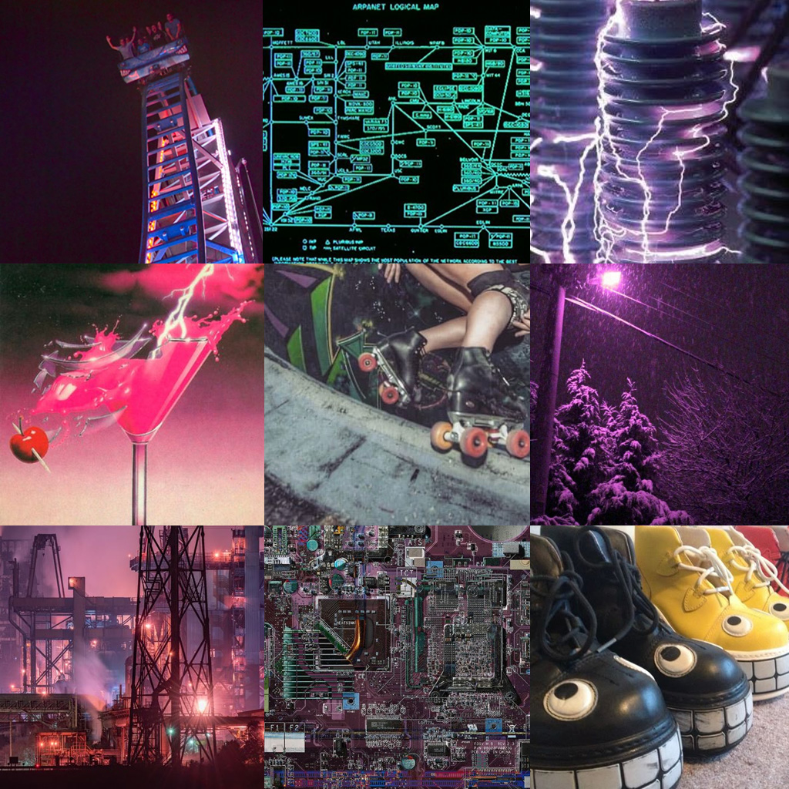
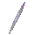

It’s _Kascade!!!! My techno hacker dork. She doesn’t have much in the way of powers, but
she’s techy and can get around fast. She can be snarky, but usually not in an overtly mean way.
She’s impulsive and something of a kleptomaniac.
> “So I hotwired the matrix to explode. That means we have roughly 8 minutes to get out of here
– race ya?”
> “You’re thinking linearly. I’m thinking panicked inspiration.”
> “I tuned the gauntlet again. No, I didn’t ask anyone.”
> “Ooh, shiny. Probably cursed. Definitely mine.”
> About her sentient bike: “You don’t steer her – just hold on and hope she
likes you today.”
She doesn’t have a fixed species but I like to think of her as a Saluki that’s been gene spliced
with wolf and ant DNA. She’s got lots of cyborg/robot bits because that’s my jam lol.
If you want to give her clothes then she would probably vibe with formal military jackets, grungy leather
jackets, anything with shoulder pads and any kind of sports gear.
She is roughly between 5 and 6 feet not including antenna.
Aesthetics Moodboard


Music Flavour Playlist
Rock, Techno, Industrial and just a
tiny hint of Chiptune.
P.S. _Kascade is my personal fursona that I’ve had for over a decade now. Her design changes a bit now
and then but she’s always an edgy canine of some sort.
I am nowhere near as cool as her of course! She’s just a character I like to play as sometimes.
( ( Bonus Fun Fact! She is the spiritual successor to a purple recolor of Tails the fox I made when I was
like 10 😁 ) )